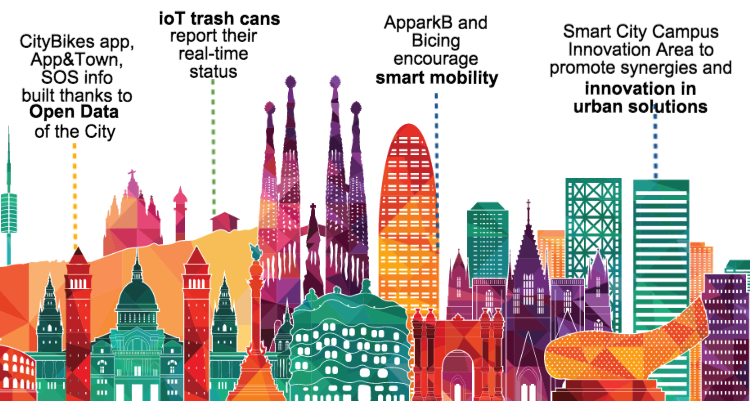
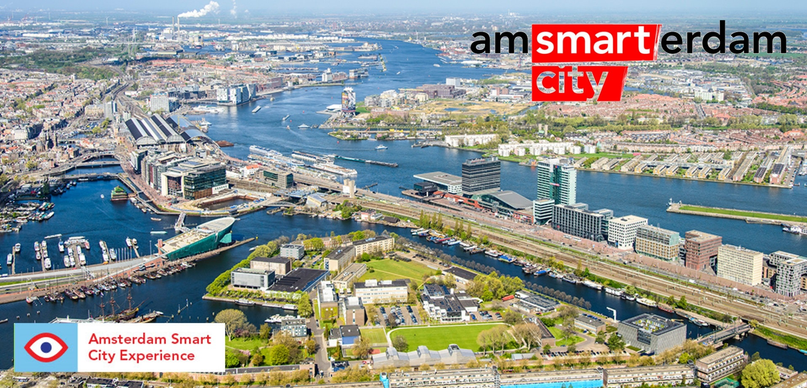

A segunda maior cidade espanhola já possui vários sensores montados em poste de luz LED que monitoram o tráfego, a qualidade do ar, a atividade de pedestres e o ruído.
Caixas inteligentes são equipadas com aspiradores e sugam resíduos para armazenamento subterrâneo, reduzindo odores desagradáveis e diminuindo o número de viagens de caminhões de coleta.
Barcelona é referência de smart cities, tanto que é pioneira em gerenciamento de trânsito por big data. O município conta com um amplo sistema de compartilhamento de bicicletas, que visa melhorar o fluxo de carros especialmente na região central.
é o sistema de coleta de lixo inteligente com lixeiras incorporadas com sensores ultrassônicos de enchimento. Esses sensores são capazes de transmitir sinais em tempo real quando as caixas estão 80% cheias e devem ser esvaziadas. Por meio da rede de comunicações móveis, os sinais são enviados para um aplicativo de software baseado na web usado pelo contratante dos serviços de limpeza. Com sinais em tempo real, o contratante pode, então, planejar a rota ideal dos serviços de coleta por enviar caminhões de coleta de lixo apenas para as lixeiras que realmente precisam ser esvaziado.
no distrito da Vila Olímpica em 1992, como parte da renovação da cidade para os Jogos Olímpicos de 1992. Desde então, Barcelona expandiu o sistema para várias áreas da cidade, uma vez que oferece uma alternativa atraente para a coleta de lixo convencional operada por veículos.
é um sistema que transporta resíduos de uma série de pontos de resíduos ou coletores para um ponto de sucção (sistema móvel) ou um centro de coleta central (sistema estacionário) por uma rede de tubos subterrâneos.
A capital holandesa combina tecnologia, eficiência energética e cultura. Além disso, apresenta um sistema avançado de serviços automatizados de uso público de bicicletas compartilhadas. Em Amsterdam, 90% dos domicílios possuem bicicletas. Outro destaque são as plataformas de compartilhamento de carros que conectam motoristas e passageiros. A capital da Holanda tem iluminação inteligente de luzes LED reguláveis. Em alguns pontos, pedestres e ciclistas podem usar um aplicativo para aumentar a luz ao passar e estas diminuem depois da passagem. Amsterdam pretende proibir carros a gasolina e diesel até 2025, tornando assim a primeira cidade de emissões zero da Europa.
Para resolver estes problemas, a Luminext desenvolveu um novo sistema de iluminação urbana, que regula a intensidade da luz de acordo com as necessidades dos cidadãos. O sistema, que pode ser programado remotamente a partir de um centro de controle, permite que as autoridades da cidade escolham reduzir a intensidade de iluminação pública específica, dependendo das áreas em que estão localizadas.
Graças aos sensores de movimento e densidade de tráfego, os postes atingem sua intensidade máxima quando pessoas ou veículos passam por sua área de influência, retornando ao ponto de menor intensidade quando menos visibilidade é necessária. Os departamentos de polícia e de trânsito também podem aumentar a intensidade máxima das luzes da rua em caso de acidente ou emergência.
De todas as possibilidades oferecidas por este sistema, porém, a mais surpreendente é aquela implementada no Atlas Park, localizado no porto de Amsterdam. Graças ao aplicativo móvel GeoLight, os próprios cidadãos que caminham, correm ou pedalam por aquela área específica da cidade, podem controlar a intensidade da iluminação pública em seus smartphones. Isto permite-lhes melhorar a visibilidade, criando assim um ambiente mais seguro para os cidadãos e, depois de passarem os postes de luz, a intensidade da luz diminui.
Todos os postes do porto estão equipados com tecnologia LED e são alimentados por painéis solares e turbinas eólicas, o que por sua vez permite que sejam independentes da rede elétrica geral em ótimas condições, o que, portanto, também economiza dinheiro em cabeamento e infraestruturas.
{kind=link}
{kind=link}
{kind=link}